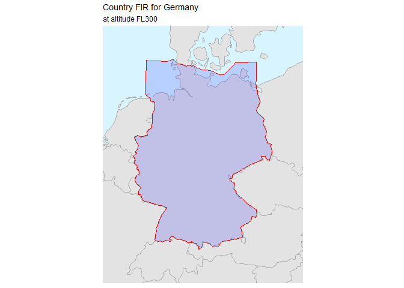
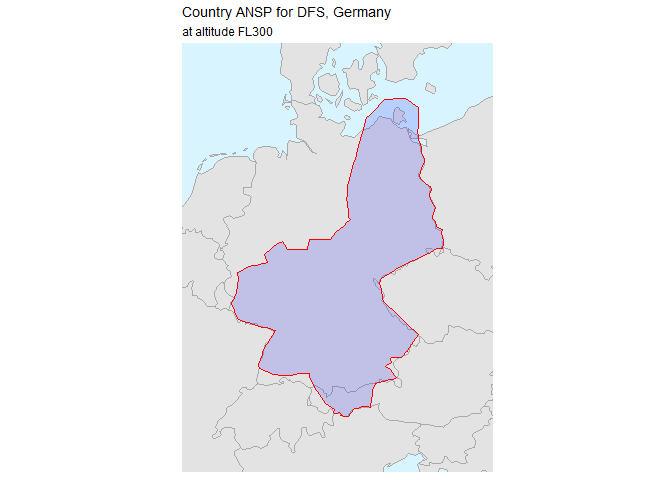

This is still Work In Progress but we value constructive feedback: please check the issues page and eventually file a bug or a feature request.
The pruatlas package provides helpers for generating maps of interest for PRU publications.
There are both high and low level facilities. For an example of a high level helper, the code for plotting a map of the Germany country FIR and ANSP is as follows:
library(sf)
library(pruatlas)
fl <- 300
plot_country_fir("ED", "Germany", fl = fl)
plot_country_ansp("DFS", "DFS, Germany", fl = fl)
Or EUROCONTROL’s Member States FIR area:
ms <- "E.|L.|UD|UG|GM|UK|GC"
plot_country_fir(icao_id = ms, "EUROCONTROL Member States", buffer = 350, fl = 200)
Lower level functions or datasets include for example countries50m, the Simple Feature for the whole world countries or extent_fir() to calculate the bounding box of a country FIR.
Useful functions are:
The package contains the following aviation GIS datasets (for CFMU AIRAC 406, see below):
-
firs_nm_406: the FIR’s as defined/used by EUROCONTROL’s Network Manager -
ansps_ace_406: the ANSP’s as defined/used in ACE Benchmarking Report
(CFMU) AIRAC 406, a.k.a. AIRAC 1512, spans the 28-day interval 2015-11-12 UTC–2015-12-10 UTC.
If you need polygons in different AIRAC’s that the one in the package and have access to EUROCONTROL DB, you can have a look at the scripts in the data-raw directory. For example export_nm_fir_geojson.R or export_ace_ansp_geojson.R allow for exporting FIR’s or ANSP’s to GeoJSON which can be read as {sf} features via sf::read_sf().